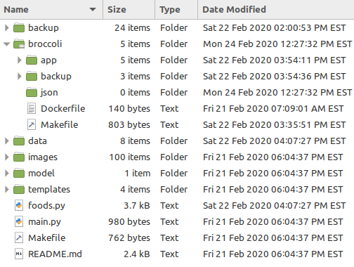

- Fri 21 February 2020
- Web Apps
- Michael Lehotay
- #configuration, #makefiles, #deployment
In this post I'll talk about the directory structure I used for my data science bootcamp capstone project, and how it made it easier for me to deploy the web app to Digital Ocean. I also made use of a couple of makefiles so I didn't have to keep re-typing the same long commands in the terminal.
